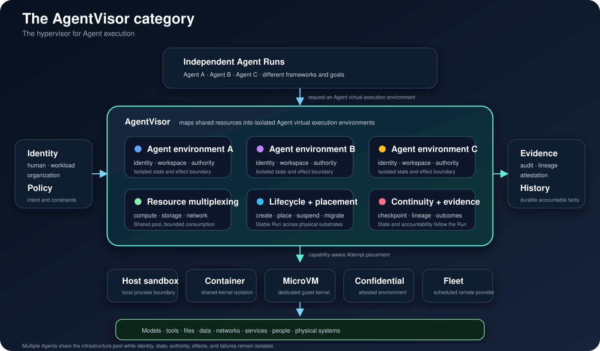
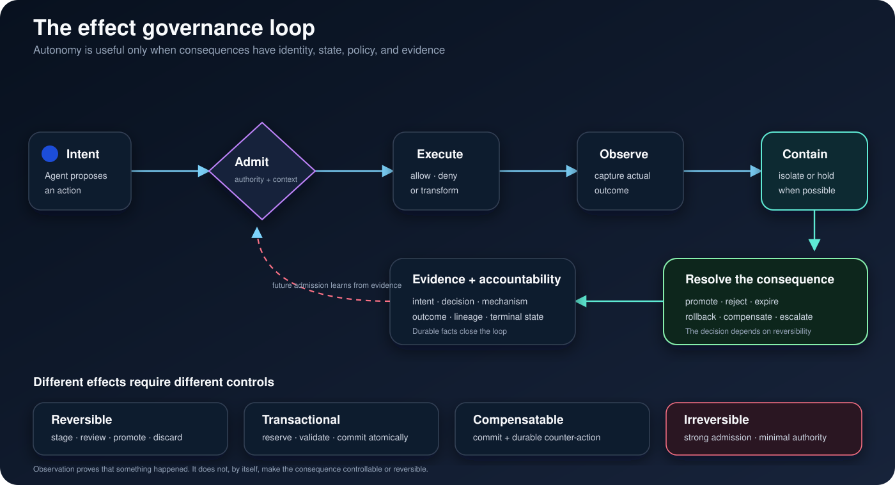
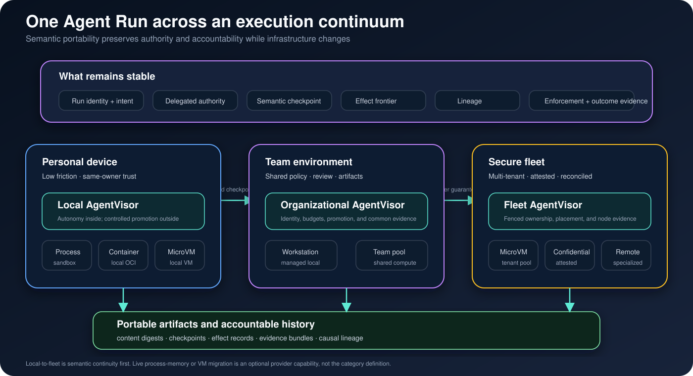

什么是 AgentVisor？¶
AgentVisor 是虚拟化 Agent 执行的 Hypervisor。
它把个人电脑、工作站或集群中的计算、文件系统、网络、模型、工具、凭据和持久状态 组织成共享资源池，再为每个 Agent Run 提供一个相互隔离的 Agent 虚拟执行环境。 不同 Agent 可以复用同一套底层环境资源，但各自拥有独立的身份、工作区、权限、状态、 外部 Effect 和故障边界。

AgentVisor 的定义¶
AgentVisor 是面向 Agent 的虚拟化层：它将共享的环境资源映射为相互隔离、可治理、 可暂停和可迁移的 Agent 虚拟执行环境，并在多个 Agent 之间负责资源复用、执行隔离、 生命周期、权限、状态和外部 Effect。
传统 Hypervisor 向操作系统提供虚拟机；AgentVisor 向 Agent 提供虚拟执行环境。这个 环境不是一种新的机器镜像格式，而是 Agent 看到的完整执行边界，包括：
- 可调度的计算、内存和加速器；
- 独立的工作区、进程、网络和工具空间；
- 可被委托且受限的模型、数据、Secret 与外部服务访问；
- 可暂停、恢复、Fork 和迁移的执行状态；
- 可隔离、审查、提交或补偿的外部 Effect；
- 跟随 Run 延续的身份、Lineage 与 Evidence。
AgentVisor 可以把这个虚拟环境映射到本地进程、操作系统 Sandbox、Container、MicroVM、 机密计算环境或远程集群。底层 Kernel、Node 和 Scheduler 可以变化，Agent 所看到的 Run identity、能力、Checkpoint、Effect 语义和责任边界保持稳定。
为什么现在需要 AgentVisor¶
传统软件通常要经过一个由人控制的边界才会行动：用户点击按钮、运维人员执行部署， 或者 API 调用方提交一个范围明确的请求。自主 Agent 则可能在数分钟、数小时甚至数天 内形成连续的决策链。在这段时间里，它可能：
- 读取私有上下文并取得临时凭据；
- 修改代码、文档、基础设施或业务记录；
- 动态选择并调用模型与工具；
- 创建子进程，或把任务委托给其他 Agent；
- 与人、组织和外部服务通信；
- 暂停、恢复、分支，并从积累的状态继续执行；
- 留下比任何参与进程都更长寿的外部效果。
这里缺少的是面向 Agent 的统一虚拟化层。Sandbox 可以隔离进程，却不决定哪些结果可以进入现实； 工作流引擎可以编排步骤，却无法证明直接网络与文件路径受到约束；模型网关可以代理 推理，却不拥有子进程、工具和工作区；可观测平台可以在事后记录事件，却不能在事件 发生前治理它们。
AgentVisor 将这些离散能力组合成一个可以被创建、调度、暂停、迁移和回收的 Agent 虚拟执行环境，并允许多个 Agent 安全地共享底层资源。
AgentVisor 位于哪里¶
AgentVisor 是一个边界明确、可以组合的基础设施层。它不会替代周边系统，而是把它们 组织进同一个自主执行边界。
| 相邻品类 | 主要负责什么 | AgentVisor 增加什么 |
|---|---|---|
| Agent framework | 推理循环、Prompt、工具适配和应用逻辑 | 与 framework 无关的 Run identity、权力、Effect、连续性和证据 |
| 模型网关 | 模型路由、认证、配额和推理遥测 | 横跨模型、工具、文件、进程与网络的统一策略上下文 |
| 工作流引擎 | 依赖图、重试和定时步骤 | 自主 Run 语义、Effect 边界、Checkpoint 与因果谱系 |
| Sandbox / Container / VM runtime | 进程和 Kernel 隔离 | 面向 Agent 的 capability admission、结果提升和跨底座身份 |
| 策略引擎 | 计算允许或拒绝的决策 | 把策略绑定到具体 Run、enforcement mechanism 和实际结果 |
| 可观测平台 | 日志、Trace、Metric 与分析 | 持久 Action/Effect identity，以及“实际 enforce 了什么”的证据 |
| Secret manager | 凭据保存和签发 | Run-scoped 委托、交付、过期和使用证据 |
“Agent Operating System”可以描述完整的开发者或企业平台。AgentVisor 是其中更精确 的基础设施品类：专门监督自主执行及其现实后果的那一层。
六项核心职责¶
任何可信的 AgentVisor 都必须同时回答六个彼此关联的问题。
1. Identity 与生命周期¶
持久执行单元是 Agent Run，不是进程或容器。同一个 Run 可能因为重试、恢复、 迁移或 placement 变化产生多个物理 Attempt，但 Run 始终保留同一个身份，以及与 父级、子级和 Checkpoint 的因果关系。
生命周期包括 admission、启动、观测、quiescence、取消、恢复、终态发布和保留策略。 如果 Effect、证据或持久状态仍然不明确，即使进程以零退出码结束，也不能认为 Run 已经真正完成。
2. 被委托的权力¶
Agent 获得的应该是显式、有限的权力，而不是用户的全部 ambient authority。权力可以 覆盖模型、工具、文件系统区域、网络目标、Secret、子进程、财务额度、通信渠道和计算 预算。
AgentVisor 把这些权力绑定到 Run 及其当前 Attempt：判断请求能否被接纳，选择能够 实现承诺的 enforcement mechanism，并禁止静默退化到更弱的边界。
3. Effect 治理¶
“允许 Agent 在 Run 内执行”与“允许执行结果进入现实世界”是两个不同决策。Agent 可以在被容纳的 Run 中自由探索、生成和修改，而不自动获得改变真实环境的权力。
AgentVisor 观测并分类 Effect，在介质允许时暂存它们，再通过策略决定提升、拒绝或 补偿。文件修改只是其中一种。消息、支付、部署、工单、数据库写入和工具 mutation 属于同一个概念平面，只是可逆性不同。
4. 连续性与分支¶
Agent 积累的不只是内存页，还包括对话状态、工作区变更、工具状态、未解决 Effect、 Credential、Artifact 和因果历史。AgentVisor 定义一种语义 Checkpoint，明确这些 内容中哪些已经存在、缺失、仍然开放或已经提交到外部世界。
该 Checkpoint 可以支持暂停/恢复、故障恢复、Fork、Replay、评测与迁移，同时不假装 所有外部系统都能被回滚。
5. 证据与责任¶
声明了策略，并不等于策略真的得到 enforce。AgentVisor 为每个相关维度记录实际采用 的机制和结果，使系统能够回答：
- 是哪个 Agent、Run、Attempt 和 authority generation 在行动？
- 涉及了哪些代码、模型、工具、Artifact 与环境？
- 哪些访问被请求、允许、拒绝，哪些仍然可能绕过？
- 哪些 Effect 被观测、暂存、提升、拒绝或补偿？
- 执行发生在哪里，实际安装了什么边界？
- 为什么该 Run 被判定为完成、失败或取消？
6. Placement 可移植性¶
执行 Provider 应该可以被替换，而不需要重写 Agent 语义。本地进程、操作系统 Sandbox、 容器、MicroVM、机密计算环境和远程集群可以提供不同的安全与性能特征，同时消费同一 套逻辑 Run 与 authority model。
可移植不意味着所有 Provider 等价，而意味着差异必须显式、admission 必须理解能力， 并且证据始终跟随 Run。
AgentVisor 的核心对象¶
行业只有先拥有共同词汇，不同实现之间才可能互操作。
| 对象 | 品类层含义 |
|---|---|
| Agent Run | 一次对用户有意义、身份稳定、意图持久的自主执行 |
| Attempt | Run 在特定 Provider 和 ownership generation 上的一次物理实现 |
| Capability Grant | 按资源、动作、条件、额度与生命周期限定的委托权力 |
| Effect | 具有稳定身份和生命周期、对外部世界有意义的观测或 mutation |
| Checkpoint | 横跨 Agent state、workspace、Effect 和 Artifact 的一致性前沿 |
| Lineage | Run、Checkpoint、委托、Artifact 与派生结果之间的因果关系 |
| Evidence Bundle | 描述执行、enforcement、Effect 和终态结果的持久事实集合 |
| Execution Provider | 实现 Attempt，并报告自身能力与证据的执行底座 |
这套对象模型刻意不依赖特定协议、数据库、容器格式、Cloud 或 Agent framework。
治理 Effect 闭环¶

Effect 治理从执行前开始，在结果得到确认后才结束。完整生命周期包括：
- Intent：Agent 或工具描述准备执行的动作。
- Admission：策略结合 Run、Capability、资源、上下文和预算进行判断。
- Execution：Enforcement point 允许、拒绝或转换动作。
- Observation：以稳定 identity 记录实际结果。
- Containment：介质允许时，让结果保持隔离或 pending。
- Promotion：策略或人把 Effect 接受进真实系统。
- Compensation：无法真正 rollback 时，用新的动作抵消已经提交的 Effect。
- Evidence：完整决策与结果进入 Run 可问责的历史。
Effect 的可逆性并不相同：
| Effect 类型 | 例子 | 适合的控制方式 |
|---|---|---|
| 可逆 | Workspace 文件、生成 Artifact、隔离分支 | 暂存、审查、提升、丢弃 |
| 事务型 | 数据库事务、部署计划、支持 prepare/commit 的 API | 预留、验证、原子提交 |
| 可补偿 | 创建工单、Cloud resource、可反向操作的业务动作 | 提交并持久化 compensation plan |
| 不可逆 | 外部消息、泄露的 Secret、物理动作、已结算支付 | 强 admission、显式 authority、最小权限、完整证据 |
把所有行为统称为“已经 Sandbox”会掩盖这些差异。AgentVisor 让差异成为产品模型的一部分。
Authority 是多维的¶
安全不能被压缩成“Sandboxed”“Containerized”或“Running in a VM”这样的单一标签。 同一个 Run 对文件系统读取、文件系统写入、网络出口、Secret、子进程、设备、工具、 模型和资源预算可能拥有完全不同的保证。
行业需要区分四种证据等级：
| 等级 | 含义 |
|---|---|
| Declared | 存在策略意图，但没有证明任何 mediation 或 enforcement |
| Mediated | 正常集成路径经过控制点，但仍可能存在绕过路径 |
| Enforced | 在声明的威胁模型内，作用域中的行动者无法绕过该机制 |
| Attested | Enforcement evidence 与精确 Run、Provider、软件身份和 authority generation 形成密码学绑定 |
AgentVisor 应当按维度独立报告证据，并在请求的保证无法实现时拒绝 Run。静默降级会让 所有被委托的权力失去意义。
从个人设备到集群¶

AgentVisor 对个人电脑和多租户集群同样重要。
在个人设备上，它可以让 Agent 在受控工作区里拥有足够自由，从而消除每一步都请求 Approve 的打断，同时保留对真实环境中结果提升的控制。
在团队和集群中，同一个 Run identity 与 Effect 语义可以进一步结合调度、Lease、 Node attestation、Tenant isolation、组织策略、共享 Artifact 和持久 Reconciliation。
可移植的执行单元不一定是一台正在运行的 VM，而是以下内容的组合：
- Run identity 与意图；
- 被委托的 authority；
- 语义 Checkpoint 与 lineage；
- Effect frontier；
- Content-addressed artifact；
- Enforcement 与结果证据。
因此，从本地到集群首先是语义问题，其次才是机器传输问题。
这个品类的设计原则¶
- 内部自主，边界受控。 Agent 的高频决策不应该对应高频人工批准。
- Authority 跟随 Run。 权力不能依附于偶然的进程、Shell、Node 或 Container identity。
- Effect 是一等对象。 外部后果需要 identity、state、policy 和 evidence，而不只是日志。
- 证据优先于标签。 具体机制和威胁模型比笼统的“安全”或“Sandboxed”更有意义。
- 禁止静默弱化。 Placement 与恢复不能把已有 Run 重新解释到更弱的边界。
- Checkpoint 必须是语义的。 它声明 Agent state 与 Effect 的一致性，而不只是内存快照。
- Provider 必须可替换。 品类位于 Kernel、Container、VM、Cloud 与 Scheduler 之上。
- 终态必须可问责。 Effect 或终态证据仍不明确时，Run 就没有真正完成。
成熟度模型¶
AgentVisor 产品应该按能力而不是营销措辞来评价。
| 等级 | 名称 | 最低特征 |
|---|---|---|
| 0 | Observed Agent | 拥有稳定 Run identity 与关联日志，但不治理 authority 和 Effect |
| 1 | Supervised Agent | 隔离的虚拟执行环境、生命周期控制、取消、有限资源与显式 execution placement |
| 2 | Governed Agent | 多维 capability enforcement 与一等 Effect lifecycle |
| 3 | Portable Agent | 语义 Checkpoint、Lineage、Provider-independent Attempt 与 local-to-fleet 连续性 |
| 4 | Accountable Agent | Attested enforcement、持久 Effect reconciliation、多租户隔离与可验证终态证据 |
Level 0 是有价值的基础设施，但还不足以代表完整 AgentVisor 品类。到 Level 2，系统开始 同时控制被委托的权力和现实 Effect，这个品类才真正形成差异。
什么样的产品才是 AgentVisor¶
一个产品要进入这个品类，至少要能够回答：
- Agent 是否拥有独立于进程 placement 的稳定 Run identity？
- 多个 Agent 是否可以在保持身份、状态、权限和故障隔离的同时共享底层环境资源？
- 被委托的 authority 是否显式、有限，并绑定到该 Run？
- Enforcement claim 是否按 capability 维度拆分，并由具体 evidence 支撑？
- 对外部世界有意义的 Effect 是否在 commit 前后都被建模？
- Run 能否在明确的语义前沿暂停、恢复或 Fork？
- Lineage 与 evidence 能否跨 execution provider 延续？
- 故障后能否 reconcile 终态，而不静默重复不可逆工作？
单独一个 Sandbox 不是 AgentVisor。模型代理、工作流引擎、Tracing 产品、权限弹窗和容器 调度器也都不是。但它们都可以成为 AgentVisor 架构中不可或缺的 Provider。
行业可以在哪里形成标准¶
AgentVisor 不需要只有一种实现，但行业可以围绕以下接口形成开放标准：
- 可移植的 Agent Run envelope 与 identity model；
- Capability dimension 与 constraint 词汇；
- Provider capability discovery 与分维度 enforcement evidence；
- Effect identity、lifecycle、promotion 与 compensation record；
- Semantic checkpoint manifest 与 effect frontier；
- Parent Run、Delegated Agent、Artifact 和 Tool 之间的因果 lineage；
- 可以脱离生产平台独立验证的 evidence bundle；
- 面向个人、企业与多租户环境的 conformance profile。
这一层实现标准化之后，Agent framework 仍然可以快速创新，Execution runtime 仍然可以 深度专业化，而组织不必因为更换基础设施就放弃 authority、continuity 与 accountability。
品类定义¶
Hypervisor 让多个操作系统安全地共享机器；AgentVisor 让多个 Agent 安全地共享执行 环境。它向下统一异构计算与隔离底座，向上提供稳定的 Agent 虚拟执行环境，并把权限、 状态、Effect 和 Evidence 纳入同一个虚拟化边界。
AgentVisor，就是 Agent 执行的虚拟化基础设施。
从品类继续到产品¶
- Run、Attempt 与 Effect定义可迁移执行对象。
- Capability 与 Evidence定义权限和 enforcement 报告。
- pVisor Overview介绍 Persisting 对这个品类的实现。
- 从本地到集群解释 placement 变化时保持哪些契约。